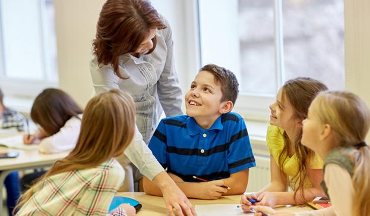

Aprendizaje Basado en Problemas
Origen, precursor e historia
| Esta metodología surgió en las ciencias de la salud, específicamente en la educación médica, para fomentar la resolución de problemas reales en la formación de los estudiantes. Inspirado por el constructivismo de Piaget y la teoría de la zona de desarrollo próximo de Vygotsky, promueve el aprendizaje a partir de problemas auténticos. |
|
Componentes para la planificación y evaluación
| Se requiere seleccionar problemas relevantes que desafíen a los estudiantes a buscar soluciones. La planificación debe contemplar la definición del problema, la investigación de posibles soluciones, y la presentación de una respuesta fundamentada. La evaluación valora tanto el proceso de resolución como el aprendizaje conceptual adquirido. |
 |
Roles del docente y del alumno
| El docente actúa como orientador y facilitador, proporcionando apoyo cuando los estudiantes encuentran dificultades. Los alumnos asumen un papel activo en la resolución de problemas, aplicando conocimientos previos y colaborando con sus compañeros. |
 |
Materiales, espacios y otros recursos
| Los materiales pueden incluir recursos digitales, artículos y estudios de caso. Los espacios deben favorecer el trabajo en equipo y el análisis de problemas, idealmente con zonas de discusión o salas de estudio. |
|
Formas de interacción
| La interacción gira en torno a la colaboración y la comunicación. Los estudiantes trabajan en equipo para identificar soluciones y reflexionar sobre sus decisiones, fomentando una interacción constructiva y crítica. |
|
Consulte otras metodologías de aprendizaje o regrese al menú
Menú
Aprendizaje Basado en Proyectos Comunitarios
Aprendizaje Basado en Indagación
Aprendizaje en el Servicio